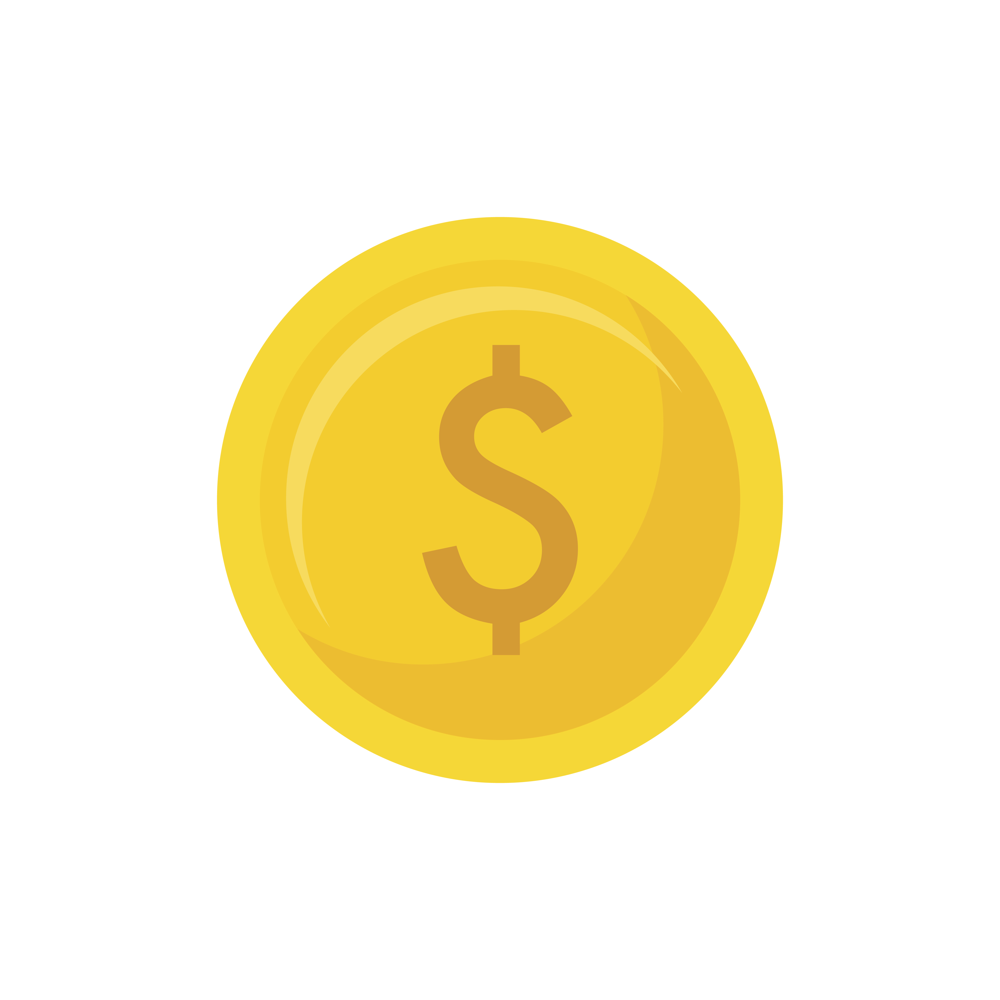

<!-- unchanged structure; aggiungo aria + titoli più sobri -->
<div class="task-card" aria-label="Attività">
  <ion-item lines="none" class="task-item"
    style="--background:var(--kid-surface,#fff); --color:var(--kid-text,#2c2c54); --background-hover:var(--kid-surface,#fff); --border-radius:14px; --padding-start:12px; --inner-padding-end:12px; --min-height:60px;">
    <ion-checkbox slot="start" [(ngModel)]="task.done" (ionChange)="onDoneChange()"
      aria-label="Completato"></ion-checkbox>
    <div class="task-accent" [style.background]="task.color"></div>

    <ion-label [class.completed]="task.done">
      <div style="display: flex; align-items: center;">
        <h2 class="task-title" style="margin-right: 12px;">{{ task.title }}</h2>
        <span style="font-size: 28px;">{{ task.icon }}</span>
      </div>
      <p class="task-time">
        🕐 {{ (task.startTime || task.start) | localTime }} → {{ (task.endTime || task.end) | localTime }}
        <ion-badge *ngIf="task.duration" class="duration-badge" color="primary" style="margin-left:8px;">
          {{ task.duration }} min
        </ion-badge>
      </p>
    </ion-label>
    <!-- Timer widget -->
    <div *ngIf="hasTimer"
         class="timer-widget"
         [class.timer-idle]="timerState === 'idle'"
         [class.timer-running]="timerState === 'running'"
         [class.timer-paused]="timerState === 'paused'"
         [class.timer-warning]="timerState === 'warning'"
         [class.timer-finished]="timerState === 'finished'"
         (click)="$event.stopPropagation(); toggleTimer()"
         slot="end">

      <!-- SVG Circular Progress Ring -->
      <svg class="timer-ring" viewBox="0 0 56 56" xmlns="http://www.w3.org/2000/svg">
        <!-- Background track -->
        <circle class="ring-track"
          cx="28" cy="28" r="24"
          fill="none" stroke-width="4"/>
        <!-- Progress arc -->
        <circle class="ring-progress"
          cx="28" cy="28" r="24"
          fill="none" stroke-width="4"
          stroke-linecap="round"
          [style.stroke]="timerColor"
          [style.stroke-dasharray]="CIRCUMFERENCE + ' ' + CIRCUMFERENCE"
          [style.stroke-dashoffset]="strokeDashoffset"
          transform="rotate(-90 28 28)"/>
      </svg>

      <!-- Center content -->
      <div class="timer-center">
        <ng-container [ngSwitch]="timerState">
          <!-- IDLE: show duration + play icon -->
          <ng-container *ngSwitchCase="'idle'">
            <ion-icon name="play-circle-outline" class="timer-icon-play"></ion-icon>
            <span class="timer-total-label">{{ timerDurationMinutes }}m</span>
          </ng-container>
          <!-- FINISHED: flash + reset icon -->
          <ng-container *ngSwitchCase="'finished'">
            <ion-icon name="refresh-circle-outline" class="timer-icon-done"></ion-icon>
            <span class="timer-done-label">Fine!</span>
          </ng-container>
          <!-- RUNNING / PAUSED / WARNING: show MM:SS -->
          <ng-container *ngSwitchDefault>
            <span class="timer-countdown">{{ timerDisplay }}</span>
            <ion-icon
              [name]="timerActive ? 'pause-circle-outline' : 'play-circle-outline'"
              class="timer-icon-control">
            </ion-icon>
          </ng-container>
        </ng-container>
      </div>
    </div>

    <!-- Icona moneta con punti -->
    <div class="reward-star" [class.earned]="task.done">
      
      <!-- <span class="star-points">+10</span> -->
    </div>

    <ion-badge class="task-badge" [style.background]="task.color"></ion-badge>
  </ion-item>
</div>